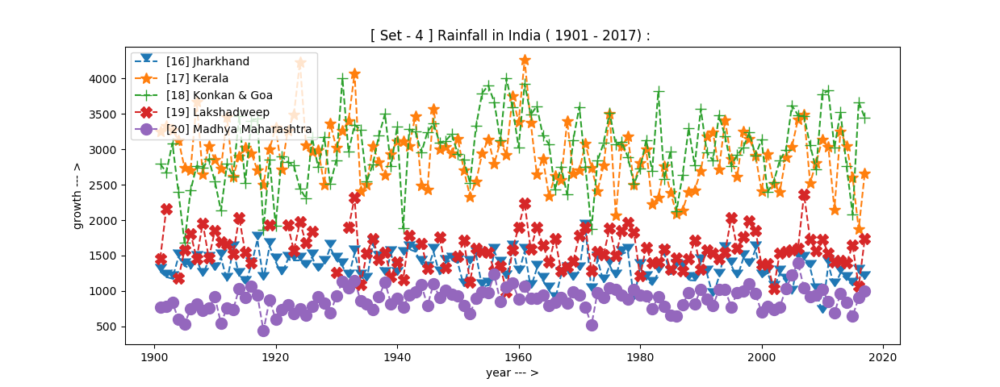

| Home > Rainfall > |
|

|
Agriculture Data
|
|
|
[02] Arunachal Pradesh [03] Assam & Meghalaya [04] Bihar [05] Chhattisgarh |
[07] Coastal Karnataka [08] East Madhya Pradesh [09] East Rajasthan [10] East Uttar Pradesh |
[12] Gujarat Region [13] Haryana Delhi & Chandigarh [14] Himachal Pradesh [15] Jammu & Kashmir |
|
[17] Kerala [18] Konkan & Goa [19] Lakshadweep [20] Madhya Maharashtra |
[22] Naga Mani Mizo Tripura [23] North Interior Karnataka [24] Orissa [25] Punjab |
[27] Saurashtra & Kutch [28] South Interior Karnataka [29] Sub Himalayan West Bengal & Sikkim [30] Tamil Nadu |
[32] Uttarakhand [33] Vidarbha [34] West Madhya Pradesh [35] West Rajasthan [36] West Uttar Pradesh |

|

|
|  |